Country · Regional Issue
K-Wave(Korea) Recognition
5-Area Comprehensive
All regions except the Middle East and Africa had the most responses to "K-Pop." "K-Pop" has maintained first place for five years since 2017. Compared to the previous year's survey, the association rate decreased by 2.8%, and the number of areas that ranked first decreased from four to three, but "K-Pop" still seems to have a great influence. In all regions, the association rate for "K-Pop" decreased, especially in Africa by 5.5%, which was relatively larger than in other regions. "Korean food" ranked at the top of the list in all regions with a similar association rate to the previous year's survey, ranking first in the Middle East, second in Asia, Oceania, Europe, and Africa, and third in the United States. Due to the global syndrome of 'Squid Game', the association rate of "Drama" increased by 1.1% compared to the previous year, and the ranking also rose two notches from fifth to third.
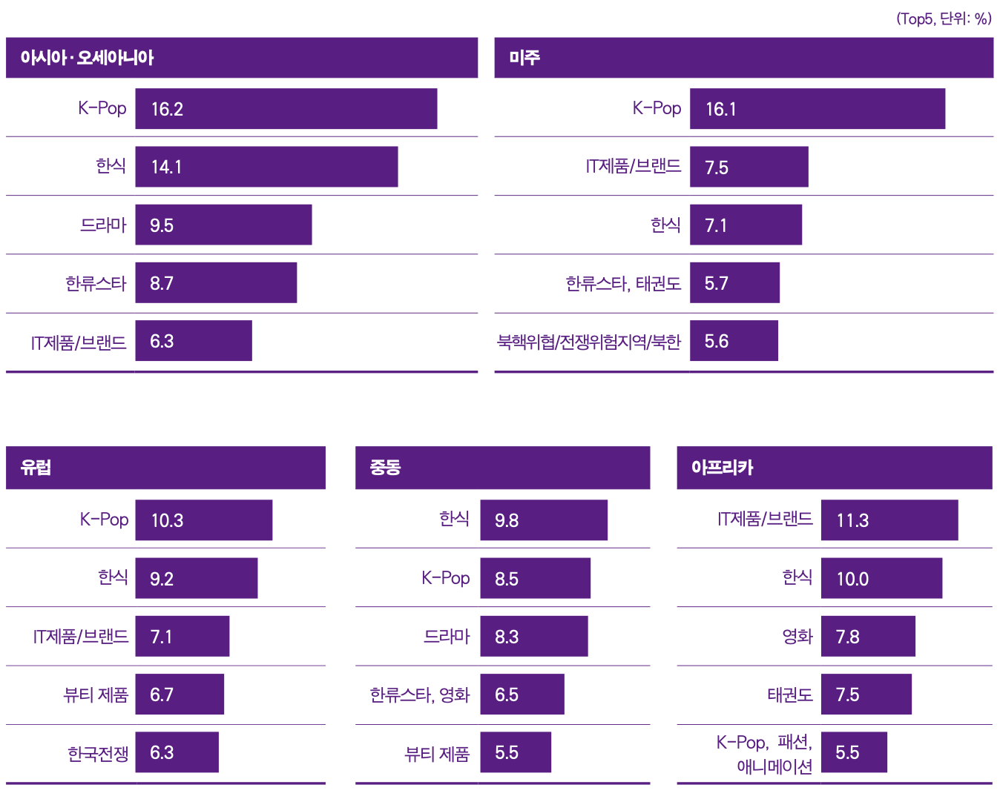Asia · Oceania
Asia and Oceania had high association rates in the order of "K-Pop," "Korean food," "Drama," "Hallyu Star," and "IT products/brand." As in the previous year's survey, "K-Pop" and "Korean Food" topped the list in five countries and three countries, respectively, dividing the upper ranks of older images. In ASEAN regions such as Thailand, Malaysia, Indonesia, and Vietnam, the association rate for "K-Pop" was the highest, while in East Asia such as China, Japan, and Taiwan, the association rate for "Korean food" was high. In particular, in Japan, "Korean food" recorded a high response rate of nearly 30%, confirming the popularity of "Korean food" in Japan. As in the past five years, India was the only country with the highest association rate of "IT products/brand." However, the response rate decreased slightly (1.8%p) compared to the previous year. Meanwhile, "Drama" and "Hallyu Star" were also selected as the top senior images in most Asian and Oceanian countries except India.
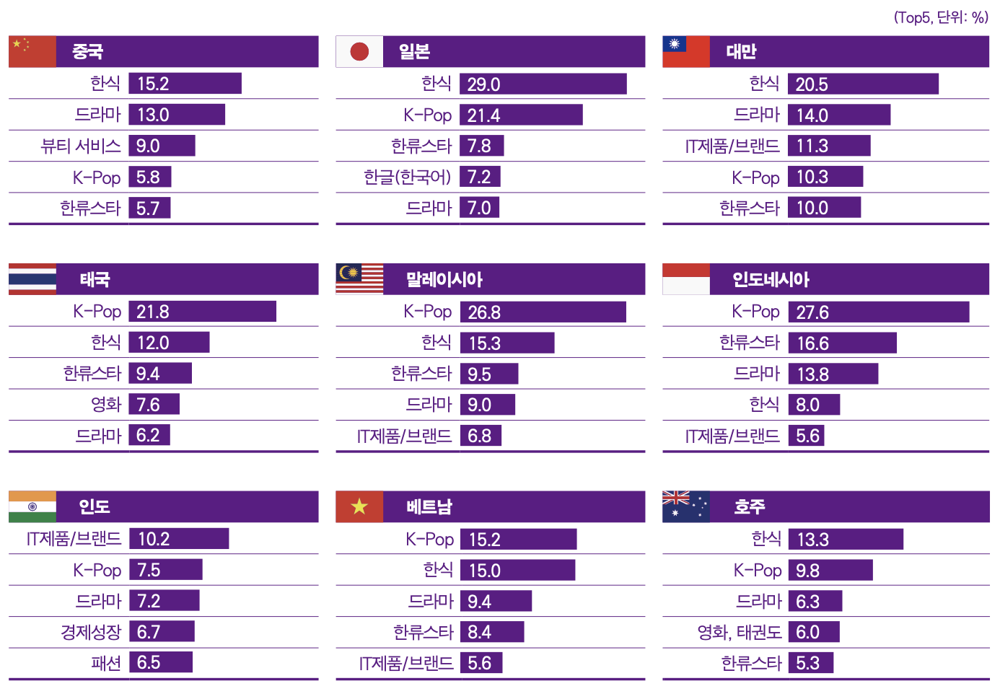America
Like the previous year, Mi-Joo also had the highest association rate of "K-Pop." By country, the U.S. regained the top spot that it gave to "Korean food," although the response rate of "K-Pop" decreased by 2.5% compared to the previous year's survey. Brazil also saw its response rate fall 7.2 percentage points from the previous year, but "K-Pop" remained at the top. Argentina, which has been included in the survey since the previous year, ranked first for the second consecutive year, with "K-Pop" recording a 16.3% response rate. Meanwhile, 'IT Products/Brands' and 'Hallyu Star' were included in the top five in all three countries. In particular, in Brazil and Argentina, "IT products/brand" ranked second after "K-Pop," indicating that "IT products/brand" are highly recognized across the Americas.
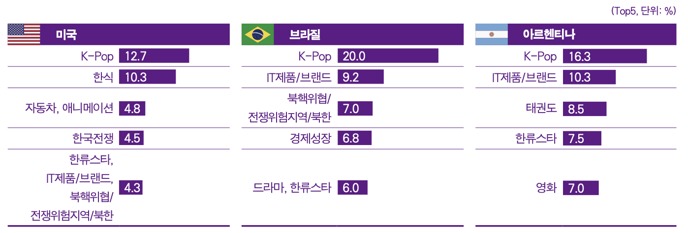Europe
In Europe, "K-Pop" and "Korean Food" are at the top of the senior image in each country, while "IT products/brand" were also ranked in the rankings in three countries except for Turkey. In France and the United Kingdom, "K-Pop" remained at the top of the list following the previous year's survey, but France's "K-Pop" association has been falling every year since 2017, and this survey also fell 0.6 percentage points from the previous year. On the other hand, the association rate of "Hallyu Star" increased by 2.6%p, rising five notches from seventh in the previous year to second. "IT products/brand" ranked third in France and fourth in the UK and Russia, showing high recognition in most parts of Europe. In Russia, "beauty products" and "automobiles" ranked first and third in their associated images, respectively, showing a different pattern from the rest of the country, and in the case of Turkiye, the "Korean War" ranked first following the previous year, indicating that the image of a military ally is still strong.
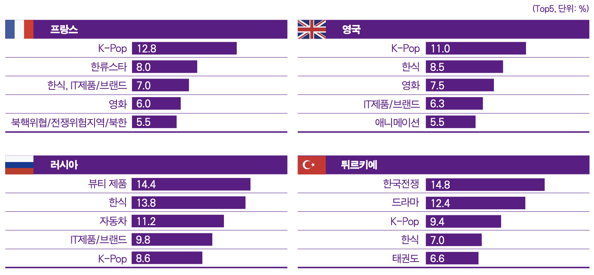Middle East · Africa
In the UAE, "Korean food" took the lead over "K-Pop," which ranked first in the association rate for four consecutive years, and the response rate also increased slightly (2.5 percentage points). Next, the overall response rate to cultural content increased compared to the previous year's survey, which showed a high association rate for "K-Pop," "Drama," "Hallyu Star," and "Movie." In the case of South Africa, "IT products/brand" took the lead following the previous year. Korean food, movies, Taekwondo, K-Pop, Fashion, and Animation then formed the top spot, with the fall of K-Pop (5.5%p), which ranked second with 11.0% association in the previous year's survey.
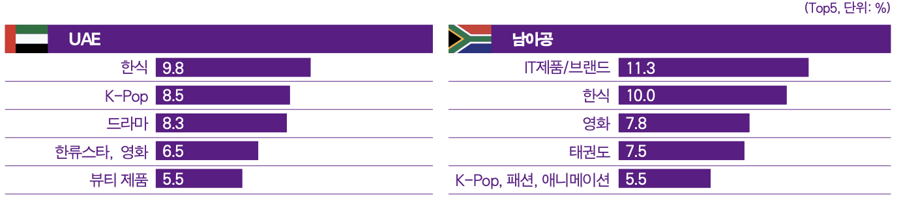K-Wave Consumption
Asia · Oceania
The proportion of Hallyu content consumption to the total cultural content consumption in Asia and Oceania was 29.87%, and the highest proportion of content was beauty (35.12%). Next, the proportion of dramas, fashion, movies, and entertainment was high, indicating that overall consumption of Korean video content and lifestyle products was active. Meanwhile, in Asia and Oceania, "online/mobile platforms" accounted for the largest portion of the main contact routes for Korean dramas, entertainment, movies, music, and animation. However, the proportion of contacts through "TV" was still about 58% to 74% by content, deepening the coexistence of new and traditional media. It was found that Korean fashion, beauty, and food were mainly contacted through "video and photo on SNS," and contact through "Korean video content" was also found to be corresponding. In the case of publications, "use through domestic sites" was about 15% more than "use of global sites," and games were often "play directly through online and mobile."
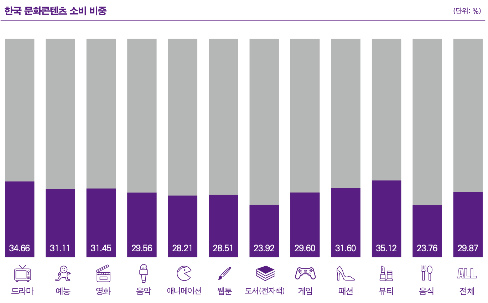 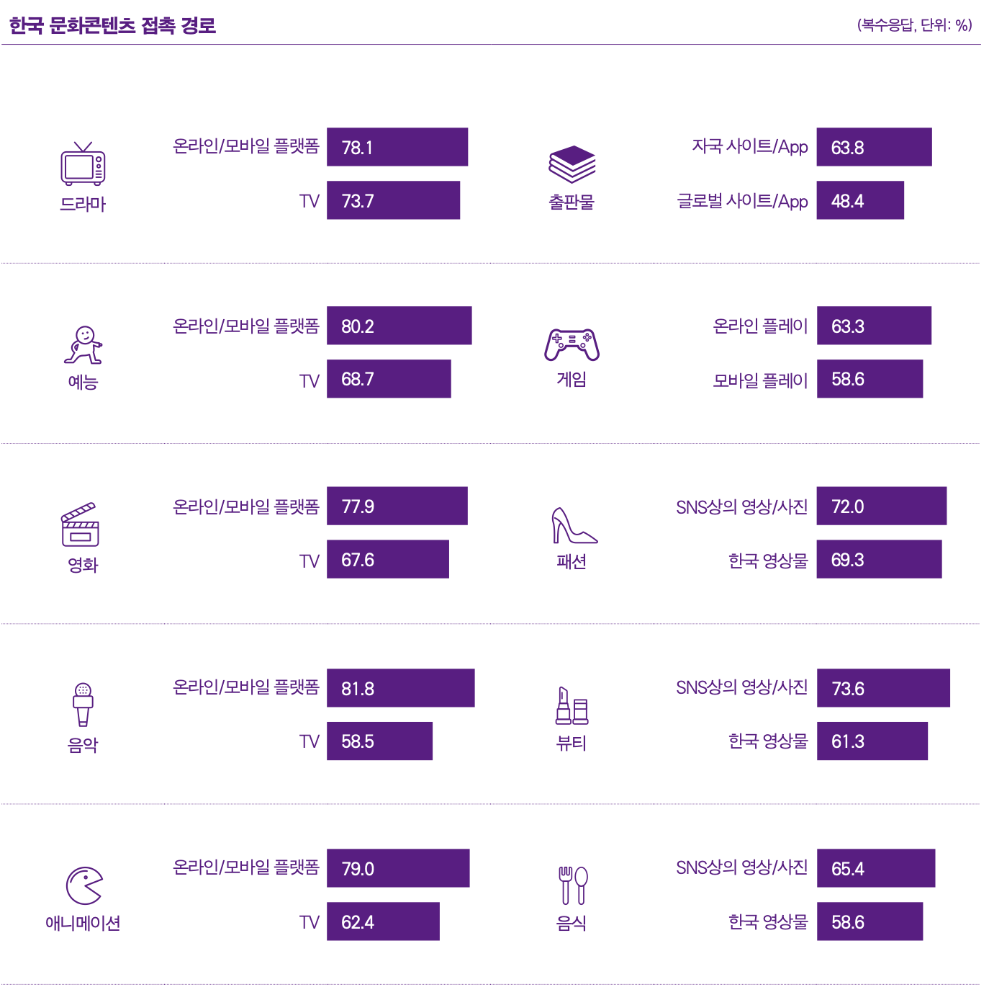America
The proportion of Korean content consumption to the total cultural content consumption in the Americas was 23.88%, and the genre with the highest proportion was beauty (28.36%), just like Asia and Oceania. It was then surveyed that the proportion of fashion, entertainment, dramas, webtoons, and movies was high, and the overall consumption of Korean cultural contents compared to other regions. Meanwhile, respondents in the Americas were also mainly using Korean video and music contents through 'online/mobile platforms'. About 80% of the respondents were using Korean dramas, entertainment shows, movies, music, and animation through "online/mobile platforms," followed by "TV." In particular, more than 80% of consumers used music through 'online/mobile platforms'. Korean fashion, beauty, and food had the highest proportion of contact through "video/photo on SNS," followed by "video made by individuals uploaded to YouTube" (beauty, food) and "Korean video content" (fashion) as windows. Games had the highest proportion of "play directly on online/mobile," and in the case of publications, they were often contacted through "global/domestic sites."
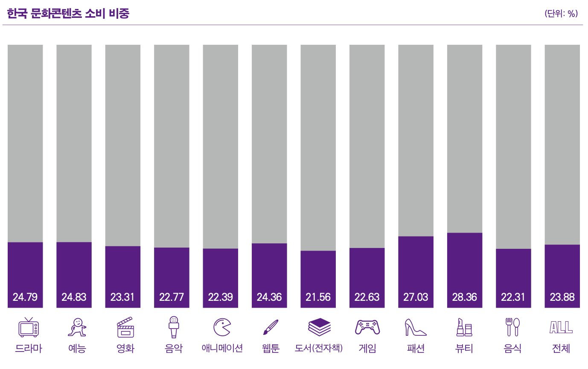 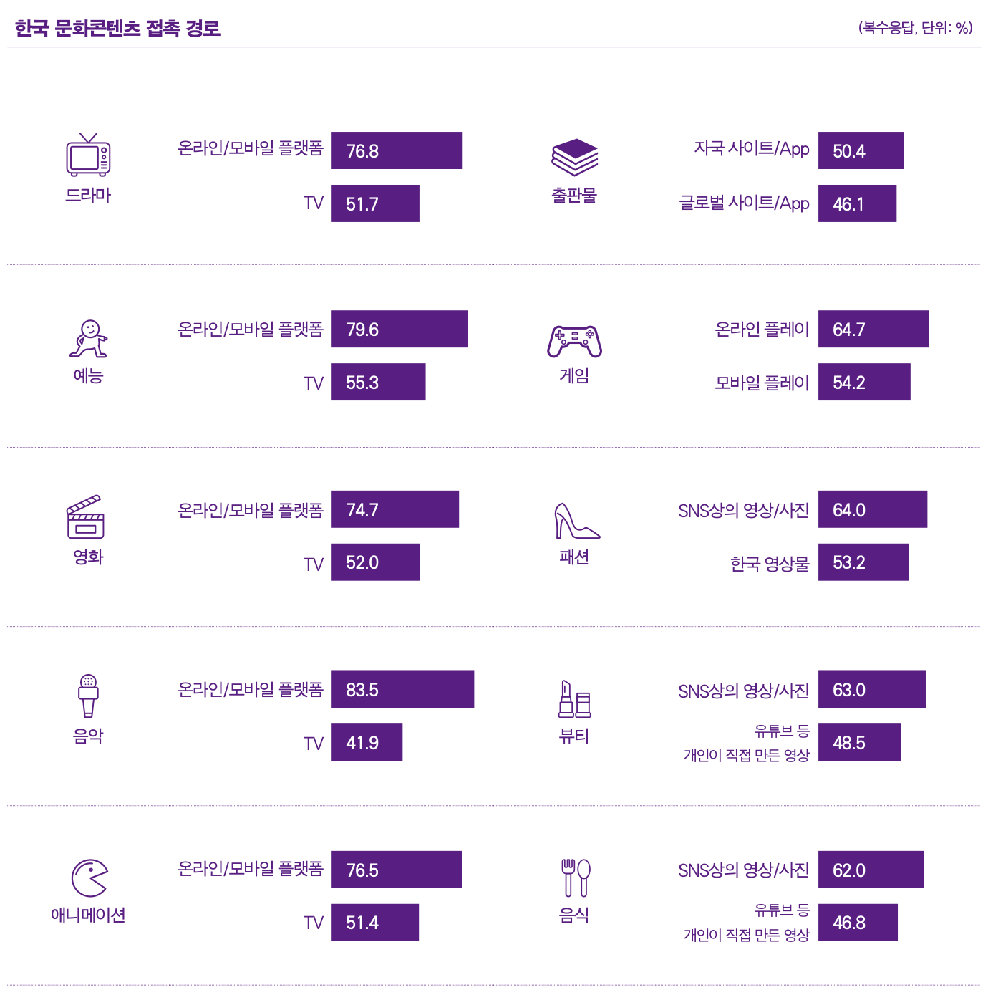Europe
The proportion of Korean content consumption to the total cultural content consumption in Europe was 21.21%, which was the highest genre (24.14%). Europe recorded 15% to 24% of Korean content consumption by content, indicating that it uses Hallyu content the least among the five regions. Looking at the contact path of Hallyu content, Europe, like other regions, was also using Korean video and music content through the 'online/mobile platform'. Except for movies, the contact rate of other dramas, entertainment, animation, and music was higher than 70%. Next, the contact rate through "TV" was high, but the gap was wide, with a difference of about 10% to 40% by genre from "online/mobile platform." Korean fashion, beauty, and food were most frequently contacted through "video/photo on SNS," followed by "video made by individuals (beauty, food) and "Korean video content (fashion) uploaded to YouTube." In the case of games, the proportion of "play directly on online/mobile" was the highest, and most of the publications were contacted through "national/global sites."
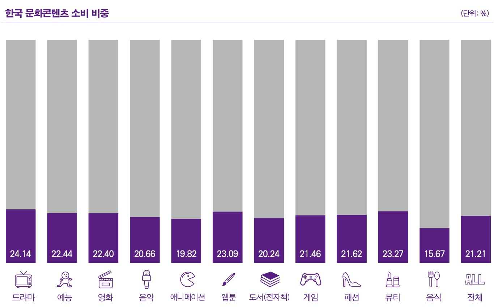 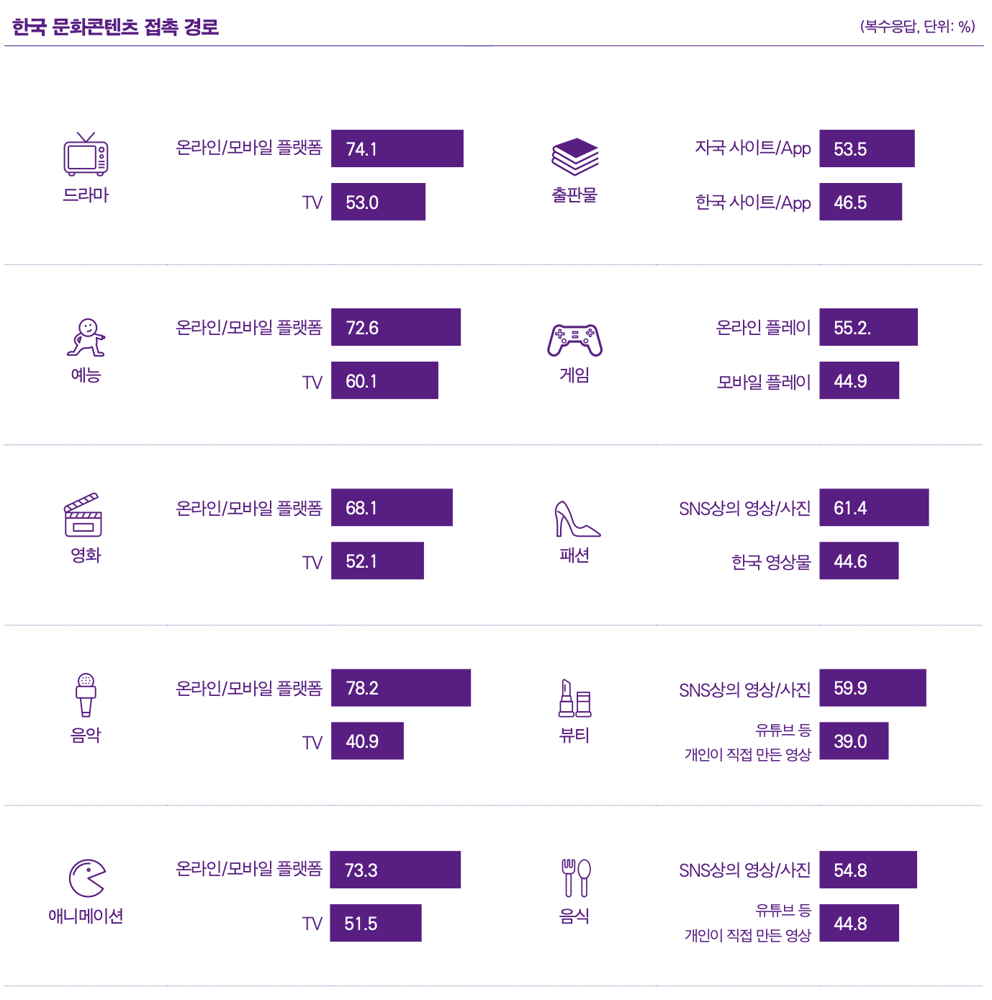Middle East
The proportion of Korean content consumption to the total cultural content consumption in the Middle East was 34.33%, the highest content (40.54%). Next, beauty (36.36%), drama (36.23%), music (35.56%), and entertainment (35.46%) accounted for more than 35%, indicating that consumption of Hallyu contents is relatively active. Like other regions, the Middle East was mainly using Korean video and music contents through 'online/mobile platforms'. Except for movies, more than 80% of consumers used the "online/mobile platform" to contact content. In particular, music accounted for more than 85%. The Korean fashion, beauty, food, and game contact routes in the Middle East were different from other regions. First of all, in the case of fashion, beauty, and food, the proportion of contact through "Korean videos," which were counted as the second or third priority, was found to be the highest in other regions. The game's No. 1 contact route, "direct play through online," had the same results as other regions, but the second ranking was counted as "watching Korean game videos," showing a clear difference.
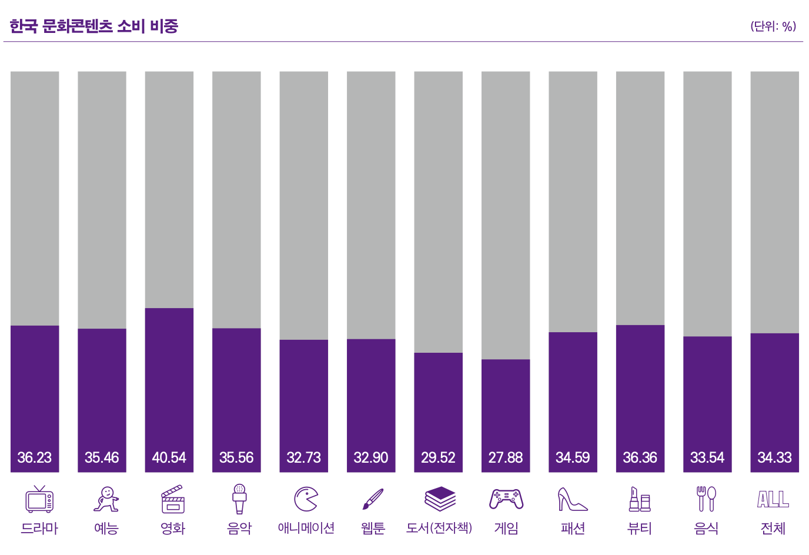 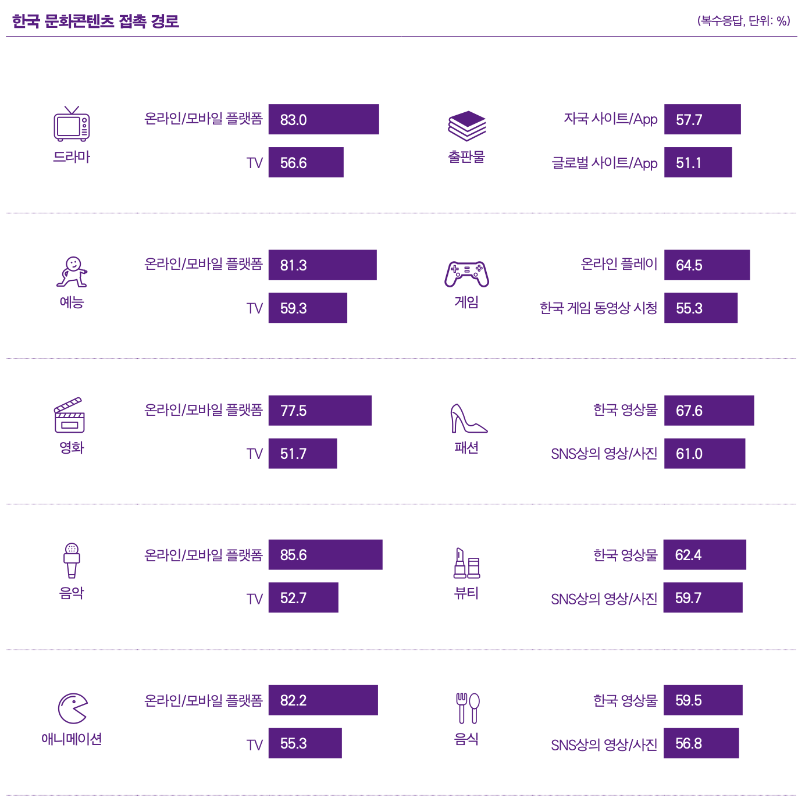